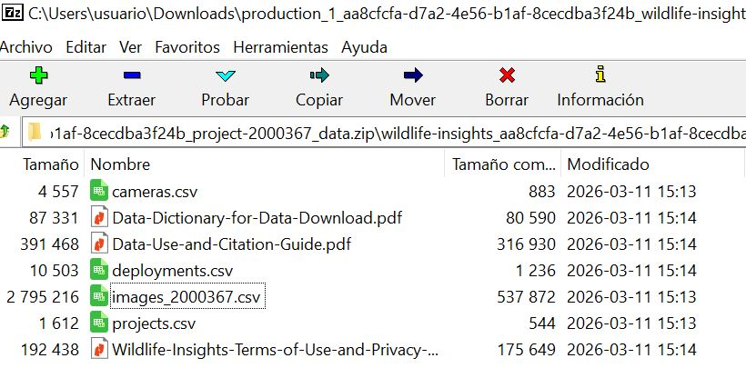

Camera trap projects often produce millions of images, which historically required manual classification reviewing picture by picture and annotating metadata (time, hour, species etc.) in a Excel spreadsheet. Wildlife Insights can reduce processing time from months to hours, enabling faster biodiversity assessments, management, and conservation decisions.
Wildlife Insights is a global platform designed to help researchers manage, analyze, and share data from camera traps. It combines cloud storage, artificial intelligence, and analytics to process camera trap images efficiently.
The platform improves traditional camera trap workflows by:
Automatically classifies animals in images using artificial intelligence (AI), reducing manual work.
Data management. Wildlife Insights organizes millions of images and metadata from multiple projects.
Analytics tools: Allows users to estimate species richness, occupancy, relative abundance indices and activity patterns.
Global collaboration. Researchers can share standardized data across projects and regions.
In this post I want to present my workflow whit the hope it will be useful to somebody else.
Once you have press the downlod button in a project from wildlifeinsights you receive an email to get the data. Notice the link is temporary.
Downloading link email
The link give you a zip file with at least 7 files. Please take your time to read the PDF.
The zip will include four key files:
● Projects.csv: metadata about project methodology and objectives, including the type of project (sequence or image) and whether count was recorded in the project.
● Cameras.csv: metadata about the devices (cameras) used in the project.
● Deployments.csv: metadata about the placement of a camera, including start date, end date, coordinates and other camera settings.
● Images.csv and (if applicable) Sequences.csv: Data about the animals detected by the camera traps are reported in one of two ways depending on how the data was recorded (denoted by project_type in the projects.csv). The download package will include both the images.csv and sequences.csv if the request includes sequence projects: The images.csv contains data about each individual image, including species identifications and timestamp.

Unzip the files to your data directory.
Organize the data 🗃️
We need to link those tables and do some processing to get the detection history of our species of interest, or the detection fo all species if we are making a multispecies model. Typically, this involves using R to:
Pivot the Wildlife Insights “images” data from long format to a wide RxJ matrix (y).
Aggregate unique site-level information into the unmarked::siteCovs data frame.
Match and format observational covariates (like date/time of each image or weather) into the unmarked::obsCovs structure.
My workflow starts with a series of custom functions and the package camtrapR to format the data according to the requirement of the unmarked package, which have become the standard for data collected on species that may be detected imperfectly. The data should have detection, non-detection records along with the covariates on detection and occupancy.
The data set was collected in 2016-2017 by Lizcano, D. J., Alvarez S. J., Gutierrez, D. R. , Sandoval, S., Jaimes, L., Sanchez J. P., And Gómez-Valencia B. As part of the Mountain Tapir Project - Colombia, of the IUCN/SSC Tapir Specialist Group (TSG).
data1<-cameras|>left_join(deployments)# join first two tablesby<-join_by("deployment_id")# join by "Deployment ID"# join by "Deployment ID" and # lets put together genus and speciesdata<-left_join(data1, images, by)|>filter(subproject_name=="Ucumari")|>mutate(binomial=paste(genus, species))
Using the coordinates of the sf object (datos_sf) we put the cameras on top of the covariates, as a raster map, and using the function terra::extract() we can get the covariate value and add it to a table.
In this case we use as covariates elevation and forest type by MapBiomas 2017, wich we should cut to the area of interest and later ploted using mapview.
Code
# let make a 3K buffer around the pointsdatos_sf_buff<-st_buffer(datos_sf, 3000)# get elevation raster from AWS using the 3K bufferelevation_detailed<-rast(get_elev_raster(datos_sf_buff, z =9, clip="bbox", neg_to_na=TRUE))slope_map<-terrain(elevation_detailed, v="slope", unit='degrees', neighbors=8)aspect_map<-terrain(elevation_detailed, v="aspect", unit='degrees', neighbors=8)roughness_map<-terrain(elevation_detailed, v =c("roughness"))# Load forest map... it is huge!# forest_type <- rast("C:/CodigoR/CameraTrapCesar/posts/2026-01-01-wildlifeinsights-to-detections/raster/2017_coverage_lclu.tif") # cut the huge forest map to 3K buffer# forest_type_cropped <- crop(forest_type, elevation_detailed)# lets remove the huge map from memory to save RAM# rm(forest_type)per_tree_cov<-rast("C:/CodigoR/WCS-CameraTrap/raster/latlon/Veg_Cont_Fields_Yearly_250m_v61/Perc_TreeCov/MOD44B_Perc_TreeCov_2017_065.tif")# cut the huge tree cover map to 3K bufferper_tree_cov_cropped<-crop(per_tree_cov, elevation_detailed)# lets remove the huge map from memory to save RAMrm(per_tree_cov)# Forest Integrity IndexFLII2017<-rast("C:/CodigoR/WCS_2024/FLI/raster/FLII_final/FLII_2017.tif")# cut the huge FLII map to 3K bufferFLII2017_cropped<-crop(FLII2017, elevation_detailed)# lets remove the huge map from memory to save RAMrm(FLII2017)# extract covs using points (datos_sf) and add to sites# covs <- cbind(sites, terra::extract(SiteCovsRast, sites))elev<-terra::extract(elevation_detailed, datos_sf)# forest_typ <- terra::extract(forest_type_cropped, datos_sf)tree_cov<-terra::extract(per_tree_cov_cropped, datos_sf)slope<-terra::extract(slope_map, datos_sf)aspect<-terra::extract(aspect_map, datos_sf)roughness<-terra::extract(roughness_map, datos_sf)flii<-terra::extract(FLII2017_cropped, datos_sf)#### make a table of cameras dropping geometrysites<-datos_sf%>%mutate( lat =st_coordinates(.)[, 1], lon =st_coordinates(.)[, 2])%>%st_drop_geometry()|>as.data.frame()### Add the covariates to the table# remove decimals convert to factor# sites$forest_typ <- factor(forest_typ[,2])sites$elev<-elev[,2]sites$tree_cov<-tree_cov[,2]sites$slope<-slope[,2]sites$aspect<-aspect[,2]sites$roughness<-roughness[,2]sites$flii<-flii[,2]mapview(per_tree_cov_cropped)+mapview(elevation_detailed)+mapview(datos_sf)
Elevation, Forest type and camera points
Third: Build the detection histories 🛠️
This step involves two parts:
A. We make a camera operation table (camop). For this step we are going to use the package camtrapR.
Code
# filter first year and make uniques to get a table of cameras and operation datesCToperation<-data|># filter(samp_year == 2021) |> # multi-season datagroup_by(deployment_id)|>mutate(minStart =min(start_date), maxEnd =max(end_date))|>distinct(longitude, latitude, minStart, maxEnd)|>#, samp_year) |>ungroup()|>as.data.frame()# camera operation matrix for# multi-season data. Season1camop<-cameraOperation( CTtable =CToperation, # Tabla de operación stationCol ="deployment_id", # Columna que define la estación setupCol ="minStart", # Columna fecha de colocación retrievalCol ="maxEnd", # Columna fecha de retiro# sessionCol = "samp_year", # multi-season column# hasProblems= T, # Hubo fallos de cámaras dateFormat ="%Y-%m-%d")# , #, # Formato de las fechas# cameraCol="CT")# sessionCol= "samp_year")# Plot camera operation as imageimage(t(camop))
This image represents in x-axis sampling ocasions (days) and y-axis sampling stations (cameras).
B. We build the detection history.
Code
# Generar las historias de detección ---------------------------------------## remove plroblem species# ind <- which(datos_PCF$Species=="Marmosa sp.")# datos_PCF <- datos_PCF[-ind,]DetHist_list_UCU<-lapply(unique(data$binomial), FUN =function(x){detectionHistory( recordTable =data, # Tabla de registros camOp =camop, # Matriz de operación de cámaras stationCol ="deployment_id", speciesCol ="binomial", recordDateTimeCol ="timestamp", recordDateTimeFormat ="%Y-%m-%d %H:%M:%S", species =x, # la función reemplaza x por cada una de las especies occasionLength =1, # Colapso de las historias a días day1 ="survey",# "station", # inicie en la fecha de cada survey datesAsOccasionNames =FALSE, # pone fecha en columna includeEffort =TRUE, scaleEffort =FALSE, unmarkedMultFrameInput =TRUE, timeZone ="America/Bogota")})# namesnames(DetHist_list_UCU)<-unique(data$binomial)# Finalmente creamos una lista nueva donde estén solo las historias de detecciónylist_UCU<-lapply(DetHist_list_UCU, FUN =function(x)x$detection_history)# y el esfuerzo de muestreoeffortlist_UCU<-lapply(DetHist_list_UCU, FUN =function(x)x$effort)### Danta, venado# which(names(ylist_UCU) == "Tapirus pinchaque")#> integer(0)# which(names(ylist_UCU) == "Mazama rufina")#> [1] 5
TipDetection History
Is a list containing the detection history for each species!
To extract from the list one specie is very simple we just use the species name or the species number from the previous list. For this example of course we are going to use the Mountain Tapir (Tapirus pinchaque) as example, just because this is my favorite species!
y_sp<-ylist_UCU$"Tapirus pinchaque"head(y_sp)#> o1 o2 o3 o4 o5 o6 o7 o8 o9 o10 o11 o12 o13 o14 o15 o16 o17 o18 o19#> CT-UC-02-24 NA NA NA NA NA NA NA NA NA NA NA NA NA NA NA NA NA NA NA#> CT-UC-02-23 NA NA NA NA NA NA NA NA NA NA NA NA NA NA NA NA NA NA NA#> CT-UC-02-22 NA NA NA NA NA NA NA NA NA NA NA NA NA NA NA NA NA NA NA#> CT-UC-02-21 NA NA NA NA NA NA NA NA NA NA NA NA NA NA NA NA NA NA NA#> CT-UC-02-18 NA NA NA NA NA NA NA NA NA NA NA NA NA NA NA NA NA NA NA#> CT-UC-02-17 NA NA NA NA NA NA NA NA NA NA NA NA NA NA NA NA NA NA NA#> o20 o21 o22 o23 o24 o25 o26 o27 o28 o29 o30 o31 o32 o33 o34 o35 o36#> CT-UC-02-24 NA NA NA NA NA NA NA NA NA NA NA NA NA NA NA NA NA#> CT-UC-02-23 NA NA NA NA NA NA NA NA NA NA NA NA NA NA NA NA NA#> CT-UC-02-22 NA NA NA NA NA NA NA NA NA NA NA NA NA NA NA NA NA#> CT-UC-02-21 NA NA NA NA NA NA NA NA NA NA NA NA NA NA NA NA NA#> CT-UC-02-18 NA NA NA NA NA NA NA NA NA NA NA NA NA NA NA NA NA#> CT-UC-02-17 NA NA NA NA NA NA NA NA NA NA NA NA NA NA NA NA NA#> o37 o38 o39 o40 o41 o42 o43 o44 o45 o46 o47 o48 o49 o50 o51 o52 o53#> CT-UC-02-24 NA NA NA NA NA NA NA NA NA NA NA 0 0 0 0 0 0#> CT-UC-02-23 NA NA NA NA NA NA NA NA NA NA NA 0 0 0 0 0 0#> CT-UC-02-22 NA NA NA NA NA NA NA NA NA NA NA 0 0 0 0 0 0#> CT-UC-02-21 NA NA NA NA NA NA NA NA NA NA NA 0 0 0 0 0 0#> CT-UC-02-18 NA NA NA NA NA NA NA NA NA NA NA 0 0 0 0 0 0#> CT-UC-02-17 NA NA NA NA NA NA NA NA NA NA NA 0 0 0 0 0 0#> o54 o55 o56 o57 o58 o59 o60 o61 o62 o63 o64 o65 o66 o67 o68 o69 o70#> CT-UC-02-24 0 0 0 0 0 0 0 0 0 0 0 1 0 1 0 0 0#> CT-UC-02-23 0 0 0 1 0 0 0 0 0 0 0 0 0 1 0 0 0#> CT-UC-02-22 1 0 0 0 1 0 0 0 0 0 1 0 0 0 0 0 0#> CT-UC-02-21 0 0 0 0 0 0 0 0 0 0 1 0 0 0 0 0 0#> CT-UC-02-18 0 0 0 0 0 0 0 0 0 0 0 0 0 0 0 0 0#> CT-UC-02-17 1 0 0 0 1 0 0 0 0 0 0 1 0 0 0 1 0#> o71 o72 o73 o74 o75 o76 o77 o78 o79 o80 o81 o82 o83 o84 o85 o86 o87#> CT-UC-02-24 0 0 0 0 0 0 0 0 0 0 0 0 0 0 0 0 0#> CT-UC-02-23 0 0 0 0 0 0 1 0 0 0 0 0 0 0 0 0 0#> CT-UC-02-22 0 0 0 0 0 0 0 0 0 0 0 0 0 0 0 0 0#> CT-UC-02-21 0 0 0 0 0 0 1 0 0 0 0 0 0 0 0 0 0#> CT-UC-02-18 0 0 0 0 0 0 0 0 0 0 0 0 0 0 0 0 0#> CT-UC-02-17 1 0 0 0 1 0 0 0 1 0 0 0 0 0 0 0 0#> o88 o89 o90 o91 o92 o93 o94 o95 o96 o97 o98 o99 o100 o101#> CT-UC-02-24 0 0 0 0 0 0 NA NA NA NA NA NA NA NA#> CT-UC-02-23 0 0 0 0 0 0 0 1 0 NA NA NA NA NA#> CT-UC-02-22 0 0 0 0 0 0 NA NA NA NA NA NA NA NA#> CT-UC-02-21 0 0 1 0 0 0 NA NA NA NA NA NA NA NA#> CT-UC-02-18 0 0 0 0 0 0 NA NA NA NA NA NA NA NA#> CT-UC-02-17 0 0 0 1 0 0 NA NA NA NA NA NA NA NA
In this dataframe we has the cameras as rows, and sampling days as columns.
Lets assembly an unmarkedFrameOccu object for the Mountain tapir 🤔
Remember this is the first step to make an occupancy model.
ImportantThis unmarkedFrameOccu object is composed by:
y: The matrix of the detection, non-detection data that is in the object y_sp.
siteCovs: The covariates that vary at the site level. We extracted those here and are stored in the object sites.
obsCovs: list of data.frames of covariates that vary with de detections.
We already have data for y and siteCovs. So we need to assembly the object obsCovs. For this case we are going to use the rainfall from the meteorological station “Nuevo Libare” right in the middle of the study area making a matrix the same size of y_sp with the precipitation value of each sampling day.
Code
# read de precipitation datarainfall_total<-read_csv("C:/CodigoR/CameraTrapCesar/posts/2026-01-01-wildlifeinsights-to-detections/data/descargaDhime.csv")sampling_start<-min(CToperation$minStart)Sampling_end<-max(CToperation$maxEnd)# extracts dates of start and end to match the precipitation datesrainfall_selected<-rainfall_total|>filter(Fecha>=sampling_start, Fecha<=Sampling_end)# put selected precipitation values on columns an repeated 49 times in rowsrainfall_mat<-matrix(rainfall_selected$Valor, nrow=49, ncol=101, byrow=TRUE)#show tabledatatable(head(y_sp))
With this table we have all the 3 objects to assembly the unmarkedFrameOccu.
Lets call this unmarkedFrameOccu object: umf.
Code
library(unmarked)umf<-unmarkedFrameOccu(y=y_sp, siteCovs=data.frame(tree_cov=sites$tree_cov, elev=sites$elev, slope=sites$slope, aspect=sites$aspect, roughness=sites$roughness, flii=sites$flii), obsCovs=list(rain=rainfall_mat))summary(umf)#> unmarkedFrame Object#> #> 49 sites#> Maximum number of observations per site: 101 #> Mean number of observations per site: 44.63 #> Sites with at least one detection: 45 #> #> Tabulation of y observations:#> 0 1 <NA> #> 1965 222 2762 #> #> Site-level covariates:#> tree_cov elev slope aspect #> Min. : 2.00 Min. :1820 Min. : 3.792 Min. : 0.4294 #> 1st Qu.:11.00 1st Qu.:1998 1st Qu.: 7.663 1st Qu.:164.5982 #> Median :20.00 Median :2127 Median :12.657 Median :199.8469 #> Mean :23.71 Mean :2140 Mean :13.926 Mean :206.3143 #> 3rd Qu.:34.00 3rd Qu.:2254 3rd Qu.:17.225 3rd Qu.:255.9186 #> Max. :54.00 Max. :2724 Max. :32.342 Max. :359.4761 #> roughness flii #> Min. : 40.0 Min. :6.153 #> 1st Qu.: 75.0 1st Qu.:8.834 #> Median :111.0 Median :9.364 #> Mean :117.4 Mean :9.029 #> 3rd Qu.:150.0 3rd Qu.:9.626 #> Max. :235.0 Max. :9.865 #> #> Observation-level covariates:#> rain #> Min. : 0.000 #> 1st Qu.: 0.000 #> Median : 3.300 #> Mean : 8.904 #> 3rd Qu.:11.200 #> Max. :95.200
From here we can make the simplest occupancy model via unmarked or ubms packages.
One species - One Season Occupancy Model 🧩
The Package unmarked has been for many years the reliable work-horse for many occupancy studies. So lets use it to model the occupancy of mountain tapirs. We already have the umf object, that was our step zero.
👉 For a deep immersion on the single season occupancy model check this (in Spanish). 👈
1️⃣ Step
Here we assembly a series of hypothesis models by varying the covariates. This is achieved using the unmarked::occu function.
Keep in mind that during the model-building process, your model must have biological significance. Each of the models can represent an ecological hypothesis. My advice here is not to make very complex models. keep it simple and test several covariates in detection first. Once you have a good covariate explaining detection fixed it and pass to “play” whit the occupancy.
Unmarked allows model selection based on the AIC of each model. Thus, the lowest AIC is the most parsimonious model according to our data (Burnham & Anderson, 2004), becoming the best supported hypothesis. Always standardize your covariates since you are using different units, elevation in meters and precipitation in mm. For this we use the scale function.
Let’s find the best predictor for detection:
Code
# detection first, occupancy nextfm0<-occu(~1~1, umf)#, starts=c(1,1)) # Null modelfm1<-occu(~scale(rain)~1, umf)# rain explaining detection models1<-fitList(# here we put names to the models'p(.)psi(.)'=fm0,'p(rain)psi(.)'=fm1)modSel(models1)# model selection procedure#> Hessian is singular.#> nPars AIC delta AICwt cumltvWt#> p(rain)psi(.) 3 1430.90 0.00 0.9913 0.99#> p(.)psi(.) 2 1440.36 9.46 0.0087 1.00
🌧️ Rainfall is a good covariate to explain detection.
2️⃣⃣ Step
Now let’s try the occupancy part keeping fixed rain for detection.
Code
fm2<-occu(~scale(rain)~scale(elev), umf)# rain in detection and elev in occupancyfm3<-occu(~scale(rain)~scale(elev+I(elev^2)), umf)# rain in detection and elev in occupancy as quadraticfm4<-occu(~scale(rain)~scale(tree_cov), umf)fm5<-occu(~scale(rain)~scale(slope), umf)fm6<-occu(~scale(rain)~scale(aspect), umf)fm7<-occu(~scale(rain)~scale(roughness), umf)fm8<-occu(~scale(rain)~scale(flii), umf)models2<-fitList(# here we put names to the models'p(rain)psi(.)'=fm1,'p(rain)psi(elev)'=fm2,'p(rain)psi(elev^2)'=fm3,'p(rain)psi(tree_cov)'=fm4,'p(rain)psi(slope)'=fm5,'p(rain)psi(aspect)'=fm6,'p(rain)psi(roughness)'=fm7,'p(rain)psi(flii)'=fm8)modSel(models2)# model selection procedure#> nPars AIC delta AICwt cumltvWt#> p(rain)psi(.) 3 1430.90 0.00 0.215 0.21#> p(rain)psi(roughness) 4 1431.50 0.60 0.159 0.37#> p(rain)psi(tree_cov) 4 1431.68 0.78 0.145 0.52#> p(rain)psi(elev) 4 1432.23 1.34 0.110 0.63#> p(rain)psi(slope) 4 1432.30 1.40 0.107 0.74#> p(rain)psi(elev^2) 4 1432.36 1.46 0.104 0.84#> p(rain)psi(aspect) 4 1432.85 1.95 0.081 0.92#> p(rain)psi(flii) 4 1432.90 2.00 0.079 1.00
🥺 Sadly none of the covariates explains the occupancy for the mountain tapir. So lets check the coefficients of the model.
We are going to build the same models but using Bayesian estimates using the same umf object and the package ubms.
Code
library(ubms)# detection first, occupancy nextfit_0<-stan_occu(~1~1, data=umf, chains=3, iter=10000, cores=3)fit_1<-stan_occu(~scale(rain)~1, data=umf, chains=3, iter=10000, cores=3)models_bayes1<-fitList(# here we put names to the models'p(.)psi(.)'=fit_0,'p(rain)psi(.)'=fit_1)## see model selection as a tabledatatable(round(modSel(models_bayes1), 3))
Instead of AIC, models are compared using leave-one-out cross-validation (LOO). Based on this cross-validation, the expected predictive accuracy (elpd) for each model is calculated. The model with the largest elpd performed best.
Lets run the ocupancy models to compare.
Code
fit_2<-stan_occu(~scale(rain)~scale(elev), umf, chains=3, iter=10000, cores=3)fit_3<-stan_occu(~scale(rain)~scale(elev+I(elev^2)), umf, chains=3, iter=10000, cores=3)fit_4<-stan_occu(~scale(rain)~scale(tree_cov), umf, chains=3, iter=10000, cores=3)fit_5<-stan_occu(~scale(rain)~scale(slope), umf, chains=3, iter=10000, cores=3)fit_6<-stan_occu(~scale(rain)~scale(aspect), umf, chains=3, iter=10000, cores=3)fit_7<-stan_occu(~scale(rain)~scale(roughness), umf, chains=3, iter=10000, cores=3)fit_8<-stan_occu(~scale(rain)~scale(flii), umf, chains=3, iter=10000, cores=3)models_bayes2<-fitList(# here we put names to the models'p(rain)psi(.)'=fit_1,'p(rain)psi(elev)'=fit_2,'p(rain)psi(elev^2)'=fit_3,'p(rain)psi(tree_cov)'=fit_4,'p(rain)psi(slope)'=fit_5,'p(rain)psi(aspect)'=fit_6,'p(rain)psi(roughness)'=fit_7,'p(rain)psi(flii)'=fit_8)datatable(round(modSel(models_bayes2), 3))
How good is the model?
Code
(fit_top_gof<-gof(fit_7, draws=100, quiet=TRUE))#> MacKenzie-Bailey Chi-square #> Point estimate = 68504584241097400#> Posterior predictive p = 0plot(fit_top_gof)
Posterior predictive should be near 0.5 if the model fits well. The model is not good at all. The first step to addressing this would be to run the model for more iterations to make sure that isn’t the reason.
Another way is to compare the simulation estimate to the proportion of zeros in the actual dataset.
Allaire, JJ, Yihui Xie, Christophe Dervieux, Jonathan McPherson, Javier Luraschi, Kevin Ushey, Aron Atkins, et al. 2025. rmarkdown: Dynamic Documents for r. https://github.com/rstudio/rmarkdown.
Appelhans, Tim, Florian Detsch, Christoph Reudenbach, and Stefan Woellauer. 2025. mapview: Interactive Viewing of Spatial Data in r. https://CRAN.R-project.org/package=mapview.
Fiske, Ian, and Richard Chandler. 2011. “unmarked: An R Package for Fitting Hierarchical Models of Wildlife Occurrence and Abundance.”Journal of Statistical Software 43 (10): 1–23. https://www.jstatsoft.org/v43/i10/.
Hollister, Jeffrey, Tarak Shah, Jakub Nowosad, Alec L. Robitaille, Marcus W. Beck, and Mike Johnson. 2023. elevatr: Access Elevation Data from Various APIs. https://doi.org/10.5281/zenodo.8335450.
Kellner, Kenneth F., Nicholas L. Fowler, Tyler R. Petroelje, Todd M. Kautz, Dean E. Beyer, and Jerrold L. Belant. 2021. “ubms: An R Package for Fitting Hierarchical Occupancy and n-Mixture Abundance Models in a Bayesian Framework.”Methods in Ecology and Evolution 13: 577–84. https://doi.org/10.1111/2041-210X.13777.
Kellner, Kenneth F., Adam D. Smith, J. Andrew Royle, Marc Kery, Jerrold L. Belant, and Richard B. Chandler. 2023. “The unmarkedR Package: Twelve Years of Advances in Occurrence and Abundance Modelling in Ecology.”Methods in Ecology and Evolution 14 (6): 1408–15. https://www.jstatsoft.org/v43/i10/.
Niedballa, Jürgen, Rahel Sollmann, Alexandre Courtiol, and Andreas Wilting. 2016. “camtrapR: An r Package for Efficient Camera Trap Data Management.”Methods in Ecology and Evolution 7 (12): 1457–62. https://doi.org/10.1111/2041-210X.12600.
Pebesma, Edzer. 2018. “Simple Features for R: Standardized Support for Spatial Vector Data.”The R Journal 10 (1): 439–46. https://doi.org/10.32614/RJ-2018-009.
R Core Team. 2024. R: A Language and Environment for Statistical Computing. Vienna, Austria: R Foundation for Statistical Computing. https://www.R-project.org/.
Wickham, Hadley, Mara Averick, Jennifer Bryan, Winston Chang, Lucy D’Agostino McGowan, Romain François, Garrett Grolemund, et al. 2019. “Welcome to the tidyverse.”Journal of Open Source Software 4 (43): 1686. https://doi.org/10.21105/joss.01686.
Xie, Yihui, J. J. Allaire, and Garrett Grolemund. 2018. R Markdown: The Definitive Guide. Boca Raton, Florida: Chapman; Hall/CRC. https://bookdown.org/yihui/rmarkdown.
Xie, Yihui, Joe Cheng, Xianying Tan, and Garrick Aden-Buie. 2025. DT: A Wrapper of the JavaScript Library “DataTables”. https://CRAN.R-project.org/package=DT.
![]()


{kind=link}
{kind=link}
{kind=link}
{kind=link}
{kind=link}
{kind=link}
{kind=link}
{kind=link}